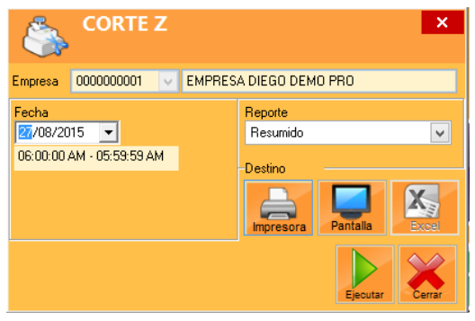
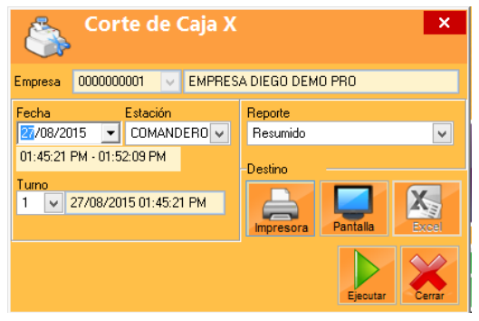
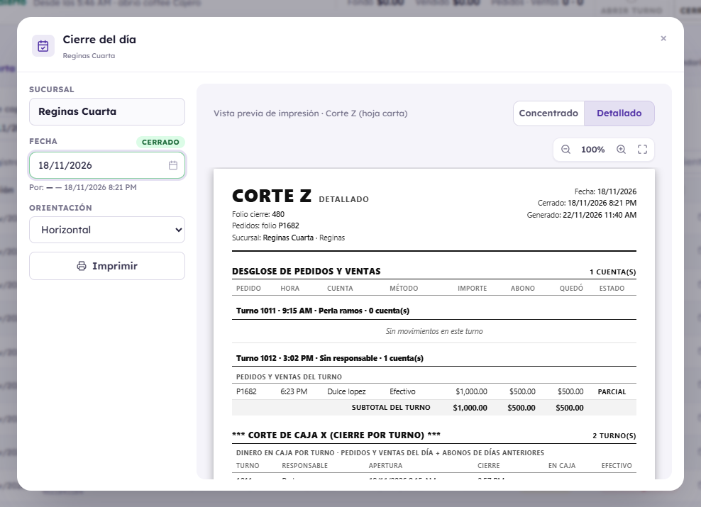
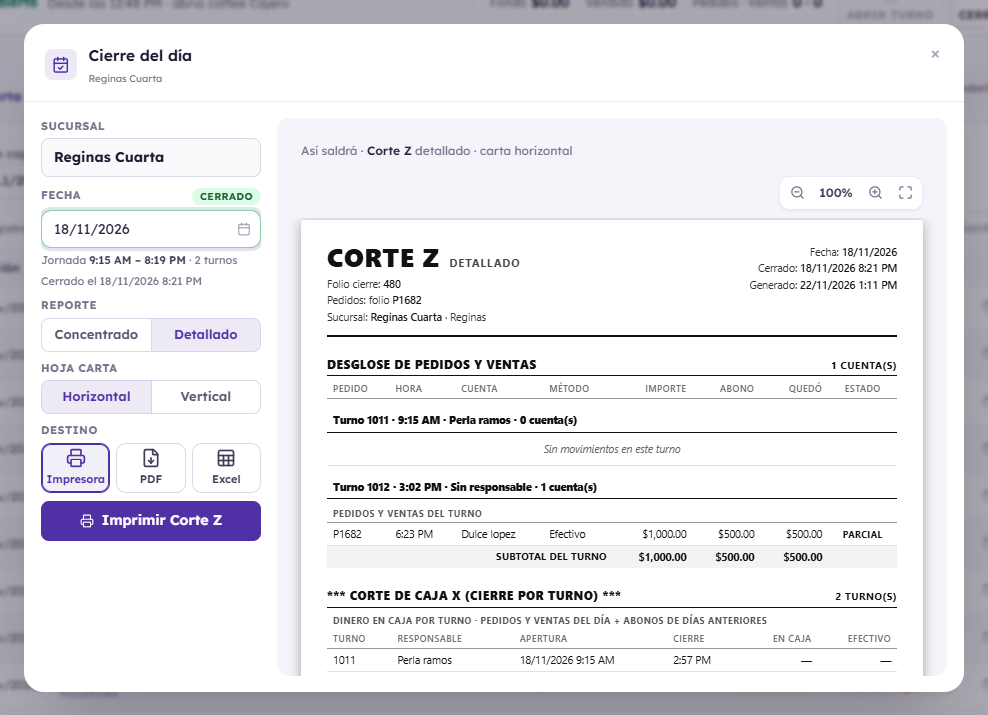
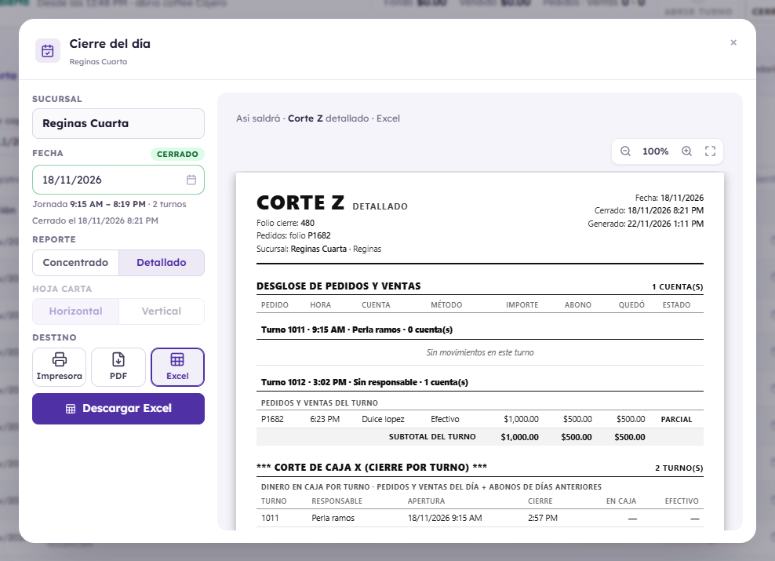
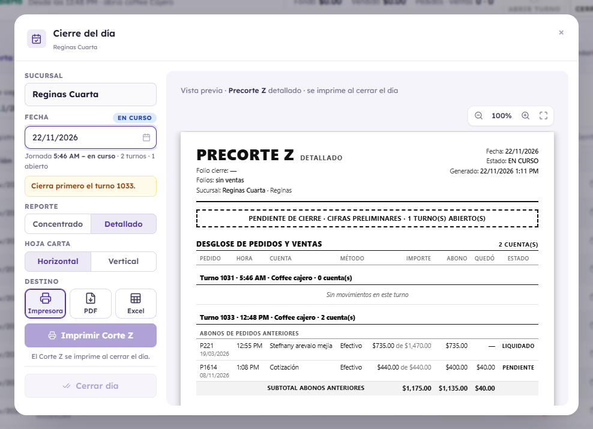
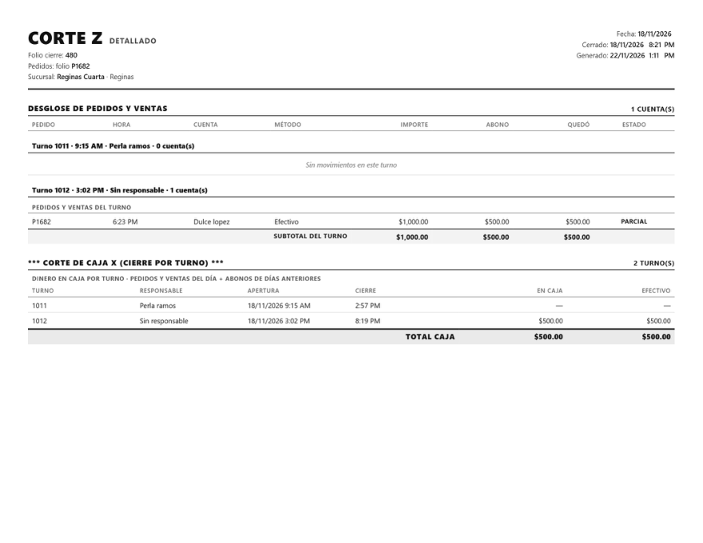
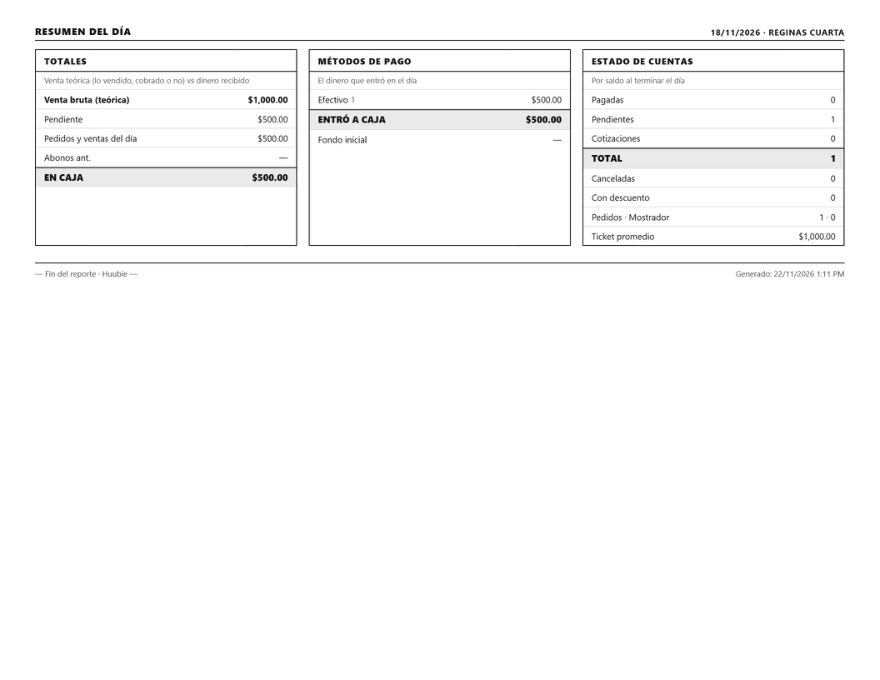

Pedidos TPV · Cierre del día · 22/11/2026
Soft imprime el Corte Z desde una ventana chica con tres pasos: fecha, reporte y destino, y un botón «Ejecutar». La propuesta pone esos mismos pasos en el panel izquierdo de tu Cierre del día. La hoja de la derecha, el zoom y «Cerrar día» se quedan como están.
Aprobada y construida en local el 22/11/2026 con tus decisiones: PDF en descarga directa, Excel sí, un día sin cerrar no se imprime y sin Corte X en el panel (sección 07).
Las dos ventanas de la caja de Soft Restaurant 9.5. El Corte Z junta todos los turnos del día; el Corte X es de un solo turno.


| Control | Qué hace en Soft |
|---|---|
| Fecha | El día del corte. Debajo, el horario que abarca: 06:00:00 AM - 05:59:59 AM. Se configura una vez en Configuración general («Horario de corte Z»). |
| Reporte | Resumido o Detallado. |
| Destino | Tres botones grandes: Impresora, Pantalla o Excel. |
| Ejecutar | Saca el corte al destino elegido. «Cerrar» sale sin hacer nada. |
| Regla | Con turnos abiertos no imprime el Corte Z: «Existen turnos abiertos. No es posible imprimir el corte Z». A la vista previa sin cerrar le dice «Precorte». |
Captura real del Cierre del día de Reginas Cuarta, 18/11/2026: día cerrado, 2 turnos.

| Código | Qué pasa | Dónde se ve en la captura |
|---|---|---|
| I1 | Lo de imprimir está en tres lugares: la orientación a la izquierda, Concentrado | Detallado arriba de la hoja y el botón abajo a la izquierda. | Panel izquierdo y franja de arriba de la hoja |
| I2 | La fecha no dice qué abarca el corte: de qué hora a qué hora ni cuántos turnos. | Debajo de «Fecha» solo sale «Por:» |
| I3 | Un día sin cerrar se imprime con el mismo título «CORTE Z». Solo un recuadro punteado avisa que son cifras preliminares. | Hoja de un día «En curso» o «Por cerrar» |
| I4 | Hay un solo destino: la hoja carta a la impresora. No hay PDF con nombre ni Excel. | Botón «Imprimir» |
| I5 | «Imprimir» es un botón blanco que siempre dice lo mismo: no destaca ni dice qué va a salir. | Botón «Imprimir» |
Capturas del módulo ya construido en local, con datos reales de Reginas Cuarta.





| Destino | Qué sale | Hoja carta | Trabajo |
|---|---|---|---|
| Impresora | La ventana de impresión de hoy (printDay), con el diálogo ya orientado. | Sí | Ninguno: ya existe. |
Descarga directa de la misma hoja, carta con 8 mm de margen: «Corte Z 18-11-2026 Reginas Cuarta detallado.pdf». Con html2pdf.js 0.10.1, copia local en pro/assets/plugins/html2pdf/. Se carga la primera vez que alguien descarga. La hoja va como imagen: el texto no se selecciona. | Sí | Hecho. | |
| Excel | Un archivo .xlsx con las tablas de la hoja: desglose, corte de caja y las 3 cajas del resumen. Los importes van como número con formato de dinero, para poder sumarlos. Con ExcelJS (ya estaba en pro/assets/plugins/exceljs/). | No: los botones de hoja se apagan | Hecho. |
| Código | Pregunta | Decisión (22/11/2026) |
|---|---|---|
| D1 | ¿El PDF con el diálogo del navegador o una descarga directa? | Descarga directa (html2pdf.js). |
| D2 | ¿Excel sí? | Sí. |
| D3 | El precorte: ¿se imprime con su marca o, como Soft, no se imprime hasta cerrar el día? | No se imprime hasta cerrar el día, como Soft. En pantalla se sigue viendo como «PRECORTE Z». |
| D4 | ¿Ticket de 80 mm como cuarto destino? | Sin respuesta: no se hizo. |
| D5 | ¿Corte X en el mismo panel (Tipo: Z del día | X de un turno, con lista de turnos), como Soft? | No. |
| Archivo | Cambio |
|---|---|
| src/js/pedido-cierre.js | deskBody con el panel en pasos; deskPaint, span y deskOutput con la jornada, el botón y por qué no sale; outputBlock y notClosedWarn (un día sin cerrar no sale); pdfDay y excelDay nuevos; dayReport con «PRECORTE Z». |
| src/css/order.css | Los segmentos, los 3 botones de destino y el botón principal (.ord-desk-seg, .ord-desk-dest, .is-run), en claro y oscuro. |
| assets/plugins/html2pdf/ | Nuevo: html2pdf.bundle.min.js 0.10.1, verificado contra el hash de cdnjs. |
| ctrl/ctrl-cierre.php | Nada: getDay ya trae cada turno con su apertura y su cierre. |
| Base de datos | Sin migraciones. |
| Visor de Cortes | Usa el mismo printDay: en un día sin cerrar «Imprimir» avisa y no imprime. |